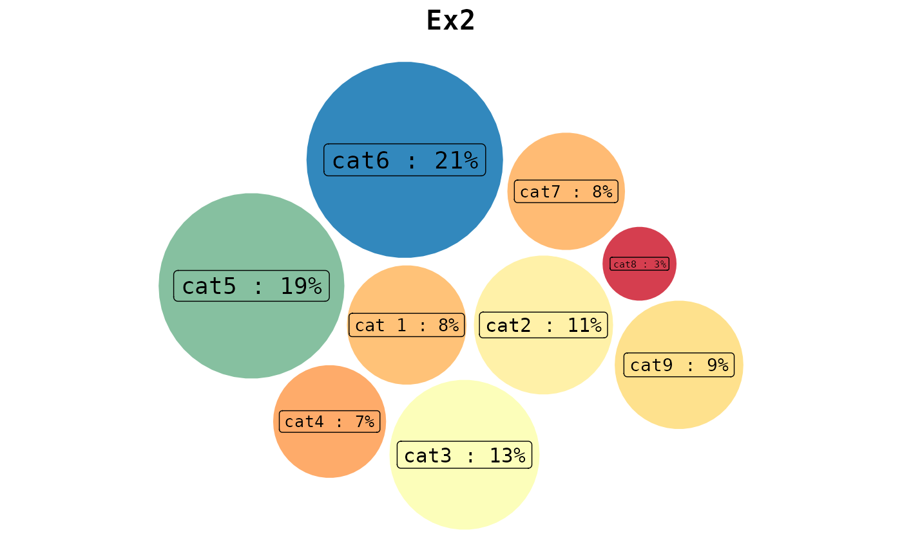

This function allows you to create cool circular packing charts easily by providing just the data and a template among the available ones. Moreover, you can choose whether and where to display percentages and also optionally specify a title for the chart.
bubble_blow(data, template, perc = "no", title = "")
| data | A data frame (or a tibble) with two variables (columns):
|
|---|---|
| template | The chosen template. |
| perc | You can choose among:
|
| title | A string. If you want, you can specify the title of the graph. |
A ggplot object. In particular, this function returns a circular packing chart according to the data, the choice of the template, and the other specifications provided.
See all the available templates displayed here!
example <- data.frame( c("This", "Is", "Just", "An", "Example"), c(2.9, 6.9, 4.20, 13.12, 6.66) ) bubble_blow( data = example, template = "bub1", perc = "below", title = "Example1" )example2 <- tibble::tibble( c("cat 1", "cat2", "cat3", "cat4", "cat5", "cat6", "cat7", "cat8", "cat9"), c(324, 432, 499, 291, 750, 836, 314, 133, 372) ) bubble_blow( data = example2, template = "bub2", perc = "right", title = "Ex2" )